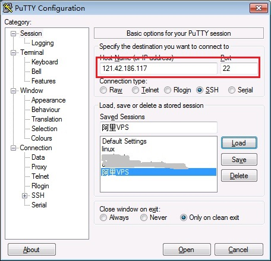
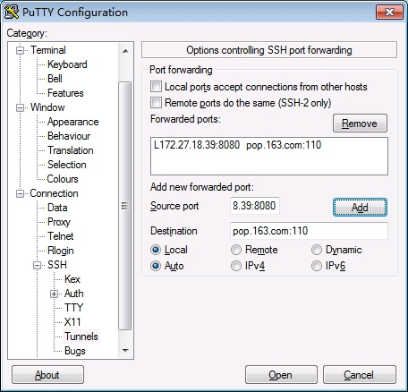
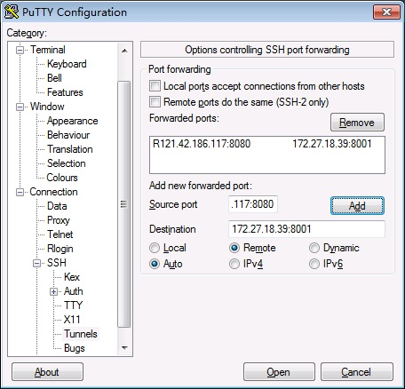
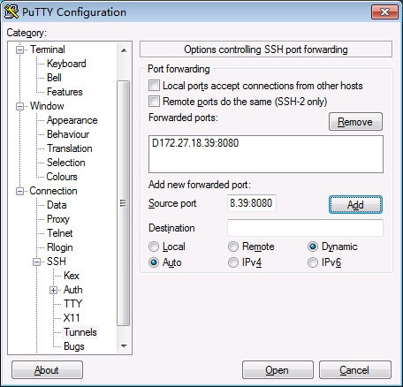

正向连接
设备和IP地址
ssh server: 121.42.186.117
ssh client: 172.27.18.39
app client: 172.27.18.39
app server: pop.163.com
填写要连接的ssh server ip和端口, 然后在connection->ssh->tunnels里填写ssh信息. Source port填ssh client的ip:port, Destination填app server的ip:port
 
点击open输入ssh server的user和pass连接到ssh server
用nc连接172.27.18.39 8080, 在ssh server上查看tcp连接, 可以看到ssh server访问了pop.163.com
C:\>nc 172.27.18.39 8080 +OK Welcome to coremail Mail Pop3 Server (163coms[726cd87d72d896a1ac393507346040fas]) USER xxxxx +OK core mail PASS xxxxx -ERR 您没有权限使用pop3功能
反向向连接
设备和IP地址
ssh server: 121.42.186.117
ssh client: 172.27.18.39
app client: 172.27.18.39
app server: 172.27.18.39
反向连接时Source port要填ssh server的ip:port, Destination要填app server的ip:port(没错吧?), 并选Remote

在浏览器里输入121.42.186.117:8080成功访问到172.27.18.39:8001提供的HTTP服务
SOCKS代理
设备和IP地址
ssh server: 121.42.186.117
ssh client: 172.27.18.39
app client: 172.27.18.39
只填写Source port为172.27.18.39:8080, 然后选择Dynamic

给浏览器设置socks代理(不是http代理), 然后随意访问一个网站, 在ssh server里能看到很多连接到你的目标网站的tcp连接